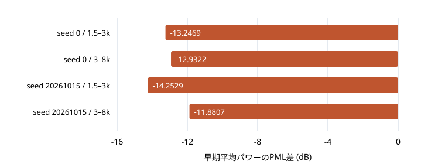

RAW_FULL
3.43260
PML差 +0.09936 · 低下 6/30条件 · 低下>0.15のflag 0/30
RESEARCH NOTE · 2026-10-19
PMLに対しRAW_FULLの予測MOS平均は上がりましたが、30条件中6条件では低下。音響警告・欠測・未分離リスクは残っています。
PML維持。RAWは未採用、120例への拡大なし。
5録音・4話者のリスク対照。音声で比較し、全90条件の保存値も確認できます。
5録音を等重みにしたUTMOSv2予測値です。人の評定MOSや総合勝者を示しません。
PML差 +0.09936 · 低下 6/30条件 · 低下>0.15のflag 0/30
PML差 +0.06464 · 低下 6/30条件 · 低下>0.15のflag 2/30
対応比較の基準 · 現ベースとして維持
自動MOSは90/90条件。相対F0/missは編集60条件で評価し、native30条件は適用外。ASRは36条件を評価し、残り54条件は正式な抜粋正解文が不足しています。
原音・現PML・主操作RAW_FULLを同じgainで並べます。ここはすべてnative・seed 0。音量を合わせる正規化はしていません。公開経路の制限に合わせ、6秒の録音は先頭5秒までを無加工で切り出しています。
5.000秒 · 同じgain 1
5.000秒 · 同じgain 1
5.000秒 · 同じgain 1
5.000秒 · 同じgain 1
5.000秒 · 同じgain 1
5.000秒 · 同じgain 1
4.045秒 · 同じgain 1
4.045秒 · 同じgain 1
4.045秒 · 同じgain 1
編集後の理想的な正解原音はありません。方式・seedごとの結果を選別せず、指定範囲の12条件を掲載します。
4.045秒 · 同じgain 1
4.045秒 · 同じgain 1
4.045秒 · 同じgain 1
4.045秒 · 同じgain 1
4.045秒 · 同じgain 1
4.045秒 · 同じgain 1
4.045秒 · 同じgain 1
4.045秒 · 同じgain 1
4.045秒 · 同じgain 1
4.045秒 · 同じgain 1
4.045秒 · 同じgain 1
4.045秒 · 同じgain 1
5.000秒 · 同じgain 1
5.000秒 · 同じgain 1
5.000秒 · 同じgain 1
4.090秒 · 同じgain 1
4.090秒 · 同じgain 1
4.090秒 · 同じgain 1
このページの音声は原音5本＋合成22条件の計27本です。残り68合成条件の音声は未収録です。下の表と公開JSONには全90合成条件の計測を残しています。音声の収録数と評価条件数を混同しません。
+3半音の主操作RAW_FULLでは、保存した早期高域パワーが両seed・両帯域でPMLから低下しました。下図は公開済みscalarの表示で、新しい波形計測やSTFTではありません。

| seed | 帯域Hz | 早期差 | 強部差 | PML交差 秒 | RAW交差 秒 | 原音交差 秒 | PML相対 ms | MOS差 |
|---|---|---|---|---|---|---|---|---|
| 0 | [1500, 3000] | -13.247 dB | +1.123 dB | 2.0985 | 2.1045 | 2.1045 | +6.0 | +0.01665 |
| 0 | [3000, 8000] | -12.932 dB | +1.153 dB | 2.0985 | 2.1045 | 2.1045 | +6.0 | +0.01665 |
| 20261015 | [1500, 3000] | -14.253 dB | -0.325 dB | 2.1005 | 2.1045 | 2.1045 | +4.0 | -0.01812 |
| 20261015 | [3000, 8000] | -11.881 dB | -0.039 dB | 2.1005 | 2.1045 | 2.1045 | +4.0 | -0.01812 |
RAW_FULLの−10dB交差は保存原音と同じ2.1045秒ですが、PML相対の+4/+6ms後退flagは保持します。5ms Hann・1ms hopの観測中心の一致であり、音素onsetやattack形状の完全保持ではありません。MOS差はseed0で+0.01665、seed20261015で−0.01812。局所パワーの低下と、聴感上のノイズ改善・音質向上は同義ではありません。
以下の旧flagはPML相対の数値観測警告です。人が聞いた悪化件数や原音からの劣化件数ではありません。MOS平均が上がっても取消しません。
| 方式 | 旧音響flagあり | 追加指標flagあり | どちらかのflagあり | 追加4項目に欠測/適用外あり |
|---|---|---|---|---|
| RAW_FULL | 25/30 | 0/30 | 25/30 | 22/30 |
| RAW_SHAPE | 20/30 | 2/30 | 20/30 | 22/30 |
現時点ではPMLを維持。RAW_FULL・RAW_SHAPEとも未採用で、正式120例への拡大は行いません。これは5録音の未分離包絡リスク対照です。
既存PMLのGaussian noiseへ、原音の高域から作った時間包絡をFFT前に掛けます。元音高に同期した振幅変調（source-AM）を分離しておらず、q_AM≡1。過渡・子音の包絡と周期的成分が混ざり得るリスク対照です。
| 方式 | 比較の意味 |
|---|---|
| PML | 現ベース。元のGNと元の正規化量を使用。 |
| RAW_SHAPE | 包絡を掛け、変調後の正規化量で再正規化した機構比較。 |
| RAW_FULL | 包絡を掛け、元の正規化量を保持。形状と正規化量の変化を含む主操作。 |
SPEC、NM、編集F0、パルス・セル時刻、後段処理は固定。同じ録音・音高・seedの方式間で乱数draw順を合わせます。異なる音高同士の絶対時刻上で同一雑音になる保証ではありません。
保存観測器は5ms periodic Hann、1ms hop。交差は保存原音の強部95百分位P*を参照する−10dB等の初回閾値到達で、音素開始の真値ではありません。全90保存波形の再実行間NPY SHA一致は再現性の記述であり、品質の証明ではありません。
native・−3・+3、seed 0・20261015、PML・RAW_SHAPE・RAW_FULLを省かず掲載します。欠測や適用外は0ではありません。詳細精度・全閾値・flagは公開JSONへ。
| 条件 | 予測MOS | MOS差 vs PML | 相対F0誤差 セント | 有声欠落率 % | 増分CER vs原音 pp | 増分WER vs原音 pp | 追加指標の固定flag |
|---|---|---|---|---|---|---|---|
| native / seed 0 / PML | 3.2560 | 基準 | 適用外(native) | 適用外(native) | 欠測 | 欠測 | 比較基準 |
| native / seed 0 / RAW_SHAPE | 3.2804 | +0.02442 | 適用外(native) | 適用外(native) | 欠測 | 欠測 | MOS警告なし 相対F0適用外 有声欠落適用外 |
| native / seed 0 / RAW_FULL | 3.3132 | +0.05725 | 適用外(native) | 適用外(native) | 欠測 | 欠測 | MOS警告なし 相対F0適用外 有声欠落適用外 |
| native / seed 20261015 / PML | 3.1469 | 基準 | 適用外(native) | 適用外(native) | 欠測 | 欠測 | 比較基準 |
| native / seed 20261015 / RAW_SHAPE | 3.3470 | +0.20005 | 適用外(native) | 適用外(native) | 欠測 | 欠測 | MOS警告なし 相対F0適用外 有声欠落適用外 |
| native / seed 20261015 / RAW_FULL | 3.4055 | +0.25856 | 適用外(native) | 適用外(native) | 欠測 | 欠測 | MOS警告なし 相対F0適用外 有声欠落適用外 |
| -3半音 / seed 0 / PML | 3.4512 | 基準 | 2.5136 | 23.7500 | 欠測 | 欠測 | 比較基準 |
| -3半音 / seed 0 / RAW_SHAPE | 3.4634 | +0.01221 | 2.4893 | 24.8447 | 欠測 | 欠測 | MOS警告なし 相対F0警告なし 有声欠落警告なし |
| -3半音 / seed 0 / RAW_FULL | 3.5378 | +0.08659 | 2.4849 | 25.3086 | 欠測 | 欠測 | MOS警告なし 相対F0警告なし 有声欠落警告なし |
| -3半音 / seed 20261015 / PML | 3.5583 | 基準 | 2.5102 | 21.7949 | 欠測 | 欠測 | 比較基準 |
| -3半音 / seed 20261015 / RAW_SHAPE | 3.6393 | +0.08094 | 2.5147 | 21.6561 | 欠測 | 欠測 | MOS警告なし 相対F0警告なし 有声欠落警告なし |
| -3半音 / seed 20261015 / RAW_FULL | 3.5728 | +0.01446 | 2.5145 | 21.6561 | 欠測 | 欠測 | MOS警告なし 相対F0警告なし 有声欠落警告なし |
| +3半音 / seed 0 / PML | 3.4076 | 基準 | 2.9079 | 6.2500 | 欠測 | 欠測 | 比較基準 |
| +3半音 / seed 0 / RAW_SHAPE | 3.4384 | +0.03076 | 2.8327 | 6.8323 | 欠測 | 欠測 | MOS警告なし 相対F0警告なし 有声欠落警告なし |
| +3半音 / seed 0 / RAW_FULL | 3.5979 | +0.19028 | 2.8641 | 6.7901 | 欠測 | 欠測 | MOS警告なし 相対F0警告なし 有声欠落警告なし |
| +3半音 / seed 20261015 / PML | 3.0998 | 基準 | 2.8787 | 5.7692 | 欠測 | 欠測 | 比較基準 |
| +3半音 / seed 20261015 / RAW_SHAPE | 3.2008 | +0.10109 | 2.8933 | 5.7325 | 欠測 | 欠測 | MOS警告なし 相対F0警告なし 有声欠落警告なし |
| +3半音 / seed 20261015 / RAW_FULL | 3.2966 | +0.19680 | 2.8700 | 5.0955 | 欠測 | 欠測 | MOS警告なし 相対F0警告なし 有声欠落警告なし |
| 条件 | RMS | RMS差 | 0–1kパワー | 低域差 | 1.5–3k早期 / 差 | 1.5–3k強部 / 差 | 3–8k早期 / 差 | 3–8k強部 / 差 | 保存PML相対観測警告 | −10dB出力−原音 ms 2帯域 |
|---|---|---|---|---|---|---|---|---|---|---|
| native / seed 0 / PML | 0.0460798 | 基準 | 0.00193576 | 基準 | 6.98221e-06 基準 | 0.00024732 基準 | 5.06376e-07 基準 | 2.25575e-05 基準 | 比較基準 | -3.000 / +3.000 |
| native / seed 0 / RAW_SHAPE | 0.0460873 | +0.001 dB | 0.00193589 | +0.000 dB | 3.36678e-06 -3.168 dB | 0.000394483 +2.028 dB | 3.17267e-07 -2.030 dB | 2.40075e-05 +0.271 dB | 1.5–3k 交差後退/未到達 | +1.000 / +1.000 |
| native / seed 0 / RAW_FULL | 0.046081 | +0.000 dB | 0.00193484 | -0.002 dB | 1.92652e-07 -15.592 dB | 0.000465073 +2.743 dB | 3.5707e-08 -11.517 dB | 2.73503e-05 +0.837 dB | 1.5–3k 交差後退/未到達 | +0.000 / +0.000 |
| native / seed 20261015 / PML | 0.0460948 | 基準 | 0.00193707 | 基準 | 1.05702e-05 基準 | 0.00017773 基準 | 6.33762e-07 基準 | 2.97464e-05 基準 | 比較基準 | -2.000 / -3.000 |
| native / seed 20261015 / RAW_SHAPE | 0.0461489 | +0.010 dB | 0.00193998 | +0.007 dB | 3.15233e-06 -5.255 dB | 0.000229303 +1.107 dB | 1.78581e-07 -5.501 dB | 3.25045e-05 +0.385 dB | 3–8k 交差後退/未到達 | +0.000 / +1.000 |
| native / seed 20261015 / RAW_FULL | 0.0461405 | +0.009 dB | 0.00193959 | +0.006 dB | 3.75231e-08 -24.498 dB | 0.00036102 +3.078 dB | 6.83091e-09 -19.674 dB | 3.47985e-05 +0.681 dB | 3–8k 交差後退/未到達 | +0.000 / +0.000 |
| -3半音 / seed 0 / PML | 0.0442074 | 基準 | 0.00177043 | 基準 | 2.78022e-05 基準 | 0.000292951 基準 | 7.23363e-07 基準 | 2.43994e-05 基準 | 比較基準 | -5.000 / +4.000 |
| -3半音 / seed 0 / RAW_SHAPE | 0.0442023 | -0.001 dB | 0.00176962 | -0.002 dB | 4.66159e-07 -17.755 dB | 0.000427503 +1.641 dB | 5.40532e-08 -11.265 dB | 2.54508e-05 +0.183 dB | 1.5–3k 交差後退/未到達 | +0.000 / +1.000 |
| -3半音 / seed 0 / RAW_FULL | 0.0441856 | -0.004 dB | 0.00176831 | -0.005 dB | 6.10797e-07 -16.582 dB | 0.000595287 +3.079 dB | 6.4938e-08 -10.469 dB | 2.31551e-05 -0.227 dB | 1.5–3k 交差後退/未到達 | -1.000 / +1.000 |
| -3半音 / seed 20261015 / PML | 0.0441789 | 基準 | 0.00176962 | 基準 | 2.24618e-05 基準 | 0.000255579 基準 | 2.00159e-06 基準 | 3.36777e-05 基準 | 比較基準 | -3.000 / -4.000 |
| -3半音 / seed 20261015 / RAW_SHAPE | 0.044196 | +0.003 dB | 0.00177229 | +0.007 dB | 8.92301e-07 -14.009 dB | 0.000231726 -0.425 dB | 8.61394e-08 -13.662 dB | 4.13755e-05 +0.894 dB | 1.5–3k 交差後退/未到達 3–8k 交差後退/未到達 | +0.000 / +0.000 |
| -3半音 / seed 20261015 / RAW_FULL | 0.0442123 | +0.007 dB | 0.00177275 | +0.008 dB | 1.03174e-06 -13.379 dB | 0.000208729 -0.879 dB | 9.48614e-08 -13.243 dB | 3.86926e-05 +0.603 dB | 3–8k 交差後退/未到達 | -1.000 / +0.000 |
| +3半音 / seed 0 / PML | 0.0421001 | 基準 | 0.00158816 | 基準 | 5.43722e-05 基準 | 0.000453264 基準 | 1.49071e-06 基準 | 2.47269e-05 基準 | 比較基準 | -5.000 / -4.000 |
| +3半音 / seed 0 / RAW_SHAPE | 0.0420973 | -0.001 dB | 0.00158988 | +0.005 dB | 3.48727e-06 -11.929 dB | 0.000362913 -0.965 dB | 2.88213e-07 -7.137 dB | 2.71418e-05 +0.405 dB | 1.5–3k 交差後退/未到達 3–8k 交差後退/未到達 | +0.000 / +1.000 |
| +3半音 / seed 0 / RAW_FULL | 0.0420456 | -0.011 dB | 0.00158674 | -0.004 dB | 2.76102e-07 -22.943 dB | 0.000474687 +0.201 dB | 3.90337e-08 -15.820 dB | 2.5966e-05 +0.212 dB | 1.5–3k 交差後退/未到達 3–8k 交差後退/未到達 | +0.000 / +1.000 |
| +3半音 / seed 20261015 / PML | 0.0420837 | 基準 | 0.00158895 | 基準 | 1.77572e-05 基準 | 0.000220109 基準 | 1.43781e-06 基準 | 3.65272e-05 基準 | 比較基準 | -4.000 / -3.000 |
| +3半音 / seed 20261015 / RAW_SHAPE | 0.0420594 | -0.005 dB | 0.00158832 | -0.002 dB | 3.94131e-06 -6.537 dB | 0.000257716 +0.685 dB | 1.81148e-07 -8.997 dB | 4.03946e-05 +0.437 dB | 1.5–3k 交差後退/未到達 3–8k 交差後退/未到達 | -1.000 / +0.000 |
| +3半音 / seed 20261015 / RAW_FULL | 0.042035 | -0.010 dB | 0.00158663 | -0.006 dB | 5.04836e-07 -15.462 dB | 0.000309624 +1.482 dB | 6.07871e-08 -13.739 dB | 3.91825e-05 +0.305 dB | 1.5–3k 交差後退/未到達 3–8k 交差後退/未到達 | +0.000 / +0.000 |
| 条件 | 予測MOS | MOS差 vs PML | 相対F0誤差 セント | 有声欠落率 % | 増分CER vs原音 pp | 増分WER vs原音 pp | 追加指標の固定flag |
|---|---|---|---|---|---|---|---|
| native / seed 0 / PML | 3.4258 | 基準 | 適用外(native) | 適用外(native) | 欠測 | 欠測 | 比較基準 |
| native / seed 0 / RAW_SHAPE | 3.5048 | +0.07898 | 適用外(native) | 適用外(native) | 欠測 | 欠測 | MOS警告なし 相対F0適用外 有声欠落適用外 |
| native / seed 0 / RAW_FULL | 3.5091 | +0.08324 | 適用外(native) | 適用外(native) | 欠測 | 欠測 | MOS警告なし 相対F0適用外 有声欠落適用外 |
| native / seed 20261015 / PML | 3.1233 | 基準 | 適用外(native) | 適用外(native) | 欠測 | 欠測 | 比較基準 |
| native / seed 20261015 / RAW_SHAPE | 3.2155 | +0.09221 | 適用外(native) | 適用外(native) | 欠測 | 欠測 | MOS警告なし 相対F0適用外 有声欠落適用外 |
| native / seed 20261015 / RAW_FULL | 3.2986 | +0.17528 | 適用外(native) | 適用外(native) | 欠測 | 欠測 | MOS警告なし 相対F0適用外 有声欠落適用外 |
| -3半音 / seed 0 / PML | 3.5977 | 基準 | 2.2146 | 21.9858 | 欠測 | 欠測 | 比較基準 |
| -3半音 / seed 0 / RAW_SHAPE | 3.7116 | +0.11394 | 2.1679 | 21.9858 | 欠測 | 欠測 | MOS警告なし 相対F0警告なし 有声欠落警告なし |
| -3半音 / seed 0 / RAW_FULL | 3.7550 | +0.15729 | 2.1717 | 21.9858 | 欠測 | 欠測 | MOS警告なし 相対F0警告なし 有声欠落警告なし |
| -3半音 / seed 20261015 / PML | 3.5601 | 基準 | 2.3995 | 23.1293 | 欠測 | 欠測 | 比較基準 |
| -3半音 / seed 20261015 / RAW_SHAPE | 3.7931 | +0.23298 | 2.4146 | 22.3776 | 欠測 | 欠測 | MOS警告なし 相対F0警告なし 有声欠落警告なし |
| -3半音 / seed 20261015 / RAW_FULL | 3.8383 | +0.27815 | 2.4233 | 22.3776 | 欠測 | 欠測 | MOS警告なし 相対F0警告なし 有声欠落警告なし |
| +3半音 / seed 0 / PML | 3.1962 | 基準 | 3.1591 | 4.2553 | 欠測 | 欠測 | 比較基準 |
| +3半音 / seed 0 / RAW_SHAPE | 3.2300 | +0.03378 | 3.0403 | 3.5461 | 欠測 | 欠測 | MOS警告なし 相対F0警告なし 有声欠落警告なし |
| +3半音 / seed 0 / RAW_FULL | 3.3337 | +0.13746 | 3.0521 | 3.5461 | 欠測 | 欠測 | MOS警告なし 相対F0警告なし 有声欠落警告なし |
| +3半音 / seed 20261015 / PML | 3.1450 | 基準 | 2.9939 | 8.1633 | 欠測 | 欠測 | 比較基準 |
| +3半音 / seed 20261015 / RAW_SHAPE | 3.1810 | +0.03599 | 3.0956 | 6.2937 | 欠測 | 欠測 | MOS警告なし 相対F0警告なし 有声欠落警告なし |
| +3半音 / seed 20261015 / RAW_FULL | 3.1479 | +0.00294 | 3.2745 | 4.8951 | 欠測 | 欠測 | MOS警告なし 相対F0警告なし 有声欠落警告なし |
| 条件 | RMS | RMS差 | 0–1kパワー | 低域差 | 1.5–3k早期 / 差 | 1.5–3k強部 / 差 | 3–8k早期 / 差 | 3–8k強部 / 差 | 保存PML相対観測警告 | −10dB出力−原音 ms 2帯域 |
|---|---|---|---|---|---|---|---|---|---|---|
| native / seed 0 / PML | 0.03174 | 基準 | 0.000922388 | 基準 | 2.53632e-06 基準 | 1.69219e-05 基準 | 1.79758e-07 基準 | 1.40734e-06 基準 | 比較基準 | -3.000 / -2.000 |
| native / seed 0 / RAW_SHAPE | 0.0315966 | -0.039 dB | 0.000914242 | -0.039 dB | 9.63438e-08 -14.204 dB | 1.54401e-05 -0.398 dB | 9.35225e-09 -12.838 dB | 1.45904e-06 +0.157 dB | 保存警告なし | -1.000 / +0.000 |
| native / seed 0 / RAW_FULL | 0.0315021 | -0.065 dB | 0.000909915 | -0.059 dB | 5.96203e-08 -16.288 dB | 1.56237e-05 -0.347 dB | 6.22528e-09 -14.605 dB | 1.64062e-06 +0.666 dB | 1.5–3k 交差後退/未到達 | +0.000 / +0.000 |
| native / seed 20261015 / PML | 0.0319227 | 基準 | 0.000931705 | 基準 | 1.08522e-06 基準 | 3.60972e-05 基準 | 1.58388e-07 基準 | 2.66467e-06 基準 | 比較基準 | +1.000 / -1.000 |
| native / seed 20261015 / RAW_SHAPE | 0.031849 | -0.020 dB | 0.000928069 | -0.017 dB | 8.64151e-08 -10.989 dB | 2.98691e-05 -0.823 dB | 8.7454e-09 -12.579 dB | 3.00875e-06 +0.527 dB | 保存警告なし | +0.000 / +0.000 |
| native / seed 20261015 / RAW_FULL | 0.0317111 | -0.058 dB | 0.000919261 | -0.058 dB | 7.42728e-08 -11.647 dB | 2.26869e-05 -2.017 dB | 6.49747e-09 -13.870 dB | 4.11058e-06 +1.883 dB | 1.5–3k 強部低下 | +0.000 / +0.000 |
| -3半音 / seed 0 / PML | 0.0309549 | 基準 | 0.00087271 | 基準 | 5.39606e-06 基準 | 1.40623e-05 基準 | 3.40324e-08 基準 | 1.92117e-06 基準 | 比較基準 | -4.000 / -4.000 |
| -3半音 / seed 0 / RAW_SHAPE | 0.03089 | -0.018 dB | 0.000870806 | -0.009 dB | 6.06097e-08 -19.495 dB | 1.0965e-05 -1.080 dB | 7.1579e-09 -6.771 dB | 2.42719e-06 +1.015 dB | 1.5–3k 交差後退/未到達 1.5–3k 強部低下 3–8k 交差後退/未到達 | +0.000 / +1.000 |
| -3半音 / seed 0 / RAW_FULL | 0.030789 | -0.047 dB | 0.000865157 | -0.038 dB | 5.775e-08 -19.705 dB | 1.0844e-05 -1.129 dB | 6.67156e-09 -7.077 dB | 2.4255e-06 +1.012 dB | 1.5–3k 交差後退/未到達 1.5–3k 強部低下 3–8k 交差後退/未到達 | +0.000 / +0.000 |
| -3半音 / seed 20261015 / PML | 0.0311694 | 基準 | 0.000883472 | 基準 | 6.12865e-06 基準 | 3.40779e-05 基準 | 7.46004e-08 基準 | 2.00728e-06 基準 | 比較基準 | -4.000 / -4.000 |
| -3半音 / seed 20261015 / RAW_SHAPE | 0.0311548 | -0.004 dB | 0.000883163 | -0.002 dB | 4.66971e-08 -21.181 dB | 6.30447e-05 +2.672 dB | 1.1625e-08 -8.073 dB | 2.87016e-06 +1.553 dB | 1.5–3k 交差後退/未到達 3–8k 交差後退/未到達 | +0.000 / +0.000 |
| -3半音 / seed 20261015 / RAW_FULL | 0.0310983 | -0.020 dB | 0.000879239 | -0.021 dB | 4.64131e-08 -21.207 dB | 5.73635e-05 +2.262 dB | 1.17206e-08 -8.038 dB | 2.63677e-06 +1.185 dB | 1.5–3k 交差後退/未到達 3–8k 交差後退/未到達 | +0.000 / +0.000 |
| +3半音 / seed 0 / PML | 0.0296529 | 基準 | 0.000794249 | 基準 | 1.28937e-05 基準 | 1.96236e-05 基準 | 7.01586e-07 基準 | 2.48257e-06 基準 | 比較基準 | -9.000 / -7.000 |
| +3半音 / seed 0 / RAW_SHAPE | 0.0297157 | +0.018 dB | 0.000796921 | +0.015 dB | 5.65508e-06 -3.579 dB | 1.42206e-05 -1.399 dB | 6.06529e-07 -0.632 dB | 4.29957e-06 +2.385 dB | 1.5–3k 交差後退/未到達 1.5–3k 強部低下 | -5.000 / -7.000 |
| +3半音 / seed 0 / RAW_FULL | 0.0296321 | -0.006 dB | 0.000792311 | -0.011 dB | 1.25766e-07 -20.108 dB | 1.35146e-05 -1.620 dB | 4.15188e-09 -22.278 dB | 3.78742e-06 +1.834 dB | 1.5–3k 交差後退/未到達 1.5–3k 強部低下 3–8k 交差後退/未到達 | +0.000 / +0.000 |
| +3半音 / seed 20261015 / PML | 0.0299843 | 基準 | 0.000813367 | 基準 | 1.39021e-05 基準 | 2.51244e-05 基準 | 8.02944e-07 基準 | 2.57768e-06 基準 | 比較基準 | -8.000 / -4.000 |
| +3半音 / seed 20261015 / RAW_SHAPE | 0.0299049 | -0.023 dB | 0.000808898 | -0.024 dB | 9.88675e-06 -1.480 dB | 2.40474e-05 -0.190 dB | 6.91553e-07 -0.649 dB | 3.86135e-06 +1.755 dB | 保存警告なし | -7.000 / -6.000 |
| +3半音 / seed 20261015 / RAW_FULL | 0.0299264 | -0.017 dB | 0.000809679 | -0.020 dB | 1.96851e-07 -18.489 dB | 1.50514e-05 -2.225 dB | 5.0454e-09 -22.018 dB | 2.38168e-06 -0.343 dB | 1.5–3k 交差後退/未到達 1.5–3k 強部低下 3–8k 交差後退/未到達 | +1.000 / +0.000 |
| 条件 | 予測MOS | MOS差 vs PML | 相対F0誤差 セント | 有声欠落率 % | 増分CER vs原音 pp | 増分WER vs原音 pp | 追加指標の固定flag |
|---|---|---|---|---|---|---|---|
| native / seed 0 / PML | 3.3046 | 基準 | 適用外(native) | 適用外(native) | +5.000 | +20.000 | 比較基準 |
| native / seed 0 / RAW_SHAPE | 3.3706 | +0.06609 | 適用外(native) | 適用外(native) | +5.000 | +20.000 | MOS警告なし 相対F0適用外 有声欠落適用外 |
| native / seed 0 / RAW_FULL | 3.3967 | +0.09217 | 適用外(native) | 適用外(native) | +5.000 | +20.000 | MOS警告なし 相対F0適用外 有声欠落適用外 |
| native / seed 20261015 / PML | 3.3106 | 基準 | 適用外(native) | 適用外(native) | +5.000 | +20.000 | 比較基準 |
| native / seed 20261015 / RAW_SHAPE | 3.1547 | -0.15593 | 適用外(native) | 適用外(native) | +5.000 | +20.000 | MOS警告あり 相対F0適用外 有声欠落適用外 |
| native / seed 20261015 / RAW_FULL | 3.1894 | -0.12124 | 適用外(native) | 適用外(native) | +5.000 | +20.000 | MOS警告なし 相対F0適用外 有声欠落適用外 |
| -3半音 / seed 0 / PML | 2.8547 | 基準 | 2.6602 | 18.8034 | +15.000 | +20.000 | 比較基準 |
| -3半音 / seed 0 / RAW_SHAPE | 2.9516 | +0.09691 | 2.6482 | 19.6581 | +10.000 | +20.000 | MOS警告なし 相対F0警告なし 有声欠落警告なし |
| -3半音 / seed 0 / RAW_FULL | 3.0033 | +0.14860 | 2.6343 | 19.6581 | +15.000 | +20.000 | MOS警告なし 相対F0警告なし 有声欠落警告なし |
| -3半音 / seed 20261015 / PML | 2.5711 | 基準 | 2.4627 | 19.1304 | +5.000 | +20.000 | 比較基準 |
| -3半音 / seed 20261015 / RAW_SHAPE | 2.7558 | +0.18473 | 7.3514 | 19.6581 | +5.000 | +20.000 | MOS警告なし 相対F0警告なし 有声欠落警告なし |
| -3半音 / seed 20261015 / RAW_FULL | 2.7671 | +0.19600 | 7.0189 | 18.8034 | +5.000 | +20.000 | MOS警告なし 相対F0警告なし 有声欠落警告なし |
| +3半音 / seed 0 / PML | 2.9804 | 基準 | 2.4546 | 8.5470 | +5.000 | +20.000 | 比較基準 |
| +3半音 / seed 0 / RAW_SHAPE | 2.9205 | -0.05991 | 3.2908 | 7.6923 | +5.000 | +20.000 | MOS警告なし 相対F0警告なし 有声欠落警告なし |
| +3半音 / seed 0 / RAW_FULL | 2.9970 | +0.01665 | 3.1348 | 8.5470 | +5.000 | +20.000 | MOS警告なし 相対F0警告なし 有声欠落警告なし |
| +3半音 / seed 20261015 / PML | 3.0651 | 基準 | 2.4951 | 7.8261 | +5.000 | +20.000 | 比較基準 |
| +3半音 / seed 20261015 / RAW_SHAPE | 3.0451 | -0.01999 | 7.1390 | 8.5470 | +5.000 | +20.000 | MOS警告なし 相対F0警告なし 有声欠落警告なし |
| +3半音 / seed 20261015 / RAW_FULL | 3.0470 | -0.01812 | 6.7251 | 9.4017 | +5.000 | +20.000 | MOS警告なし 相対F0警告なし 有声欠落警告なし |
| 条件 | RMS | RMS差 | 0–1kパワー | 低域差 | 1.5–3k早期 / 差 | 1.5–3k強部 / 差 | 3–8k早期 / 差 | 3–8k強部 / 差 | 保存PML相対観測警告 | −10dB出力−原音 ms 2帯域 |
|---|---|---|---|---|---|---|---|---|---|---|
| native / seed 0 / PML | 0.0621069 | 基準 | 0.00202325 | 基準 | 3.96478e-08 基準 | 5.05552e-05 基準 | 3.92823e-08 基準 | 4.32842e-05 基準 | 比較基準 | -6.000 / -7.000 |
| native / seed 0 / RAW_SHAPE | 0.0620649 | -0.006 dB | 0.00202171 | -0.003 dB | 3.90759e-08 -0.063 dB | 6.63013e-05 +1.178 dB | 3.81025e-08 -0.132 dB | 4.4923e-05 +0.161 dB | 1.5–3k 交差後退/未到達 3–8k 交差後退/未到達 | +0.000 / +0.000 |
| native / seed 0 / RAW_FULL | 0.0619606 | -0.020 dB | 0.00201732 | -0.013 dB | 3.96084e-08 -0.004 dB | 8.5767e-05 +2.296 dB | 3.84995e-08 -0.087 dB | 5.3194e-05 +0.895 dB | 1.5–3k 交差後退/未到達 3–8k 交差後退/未到達 | +0.000 / +0.000 |
| native / seed 20261015 / PML | 0.0620617 | 基準 | 0.00202298 | 基準 | 3.87591e-08 基準 | 5.75977e-05 基準 | 4.43677e-08 基準 | 3.50096e-05 基準 | 比較基準 | -8.000 / -5.000 |
| native / seed 20261015 / RAW_SHAPE | 0.0621128 | +0.007 dB | 0.00202428 | +0.003 dB | 3.5875e-08 -0.336 dB | 6.99891e-05 +0.846 dB | 4.54395e-08 +0.104 dB | 4.66615e-05 +1.248 dB | 1.5–3k 交差後退/未到達 3–8k 交差後退/未到達 | +0.000 / +0.000 |
| native / seed 20261015 / RAW_FULL | 0.0620148 | -0.007 dB | 0.00202258 | -0.001 dB | 3.62936e-08 -0.285 dB | 8.15749e-05 +1.512 dB | 4.56591e-08 +0.125 dB | 5.11533e-05 +1.647 dB | 1.5–3k 交差後退/未到達 3–8k 交差後退/未到達 | +0.000 / +0.000 |
| -3半音 / seed 0 / PML | 0.05906 | 基準 | 0.00177258 | 基準 | 2.56487e-06 基準 | 8.5642e-05 基準 | 1.95412e-06 基準 | 6.0067e-05 基準 | 比較基準 | -11.000 / -11.000 |
| -3半音 / seed 0 / RAW_SHAPE | 0.0590772 | +0.003 dB | 0.00177583 | +0.008 dB | 5.15893e-08 -16.965 dB | 6.83253e-05 -0.981 dB | 5.38271e-08 -15.599 dB | 7.10148e-05 +0.727 dB | 1.5–3k 交差後退/未到達 3–8k 交差後退/未到達 | -1.000 / -1.000 |
| -3半音 / seed 0 / RAW_FULL | 0.0590449 | -0.002 dB | 0.00177365 | +0.003 dB | 4.31193e-08 -17.744 dB | 6.39958e-05 -1.265 dB | 4.62998e-08 -16.254 dB | 6.64319e-05 +0.437 dB | 1.5–3k 交差後退/未到達 1.5–3k 強部低下 3–8k 交差後退/未到達 | +0.000 / +0.000 |
| -3半音 / seed 20261015 / PML | 0.0589691 | 基準 | 0.00177322 | 基準 | 9.27908e-06 基準 | 6.43728e-05 基準 | 1.64446e-06 基準 | 4.08674e-05 基準 | 比較基準 | -12.000 / -9.000 |
| -3半音 / seed 20261015 / RAW_SHAPE | 0.0589672 | -0.000 dB | 0.00177312 | -0.000 dB | 6.32244e-08 -21.666 dB | 6.52245e-05 +0.057 dB | 4.70456e-08 -15.435 dB | 4.42528e-05 +0.346 dB | 1.5–3k 交差後退/未到達 3–8k 交差後退/未到達 | -1.000 / -1.000 |
| -3半音 / seed 20261015 / RAW_FULL | 0.0589667 | -0.000 dB | 0.00177231 | -0.002 dB | 4.62183e-08 -23.027 dB | 6.62861e-05 +0.127 dB | 4.42858e-08 -15.698 dB | 4.10838e-05 +0.023 dB | 1.5–3k 交差後退/未到達 3–8k 交差後退/未到達 | +0.000 / -1.000 |
| +3半音 / seed 0 / PML | 0.0577631 | 基準 | 0.00162875 | 基準 | 1.04932e-06 基準 | 8.1185e-05 基準 | 6.61154e-07 基準 | 4.45243e-05 基準 | 比較基準 | -6.000 / -6.000 |
| +3半音 / seed 0 / RAW_SHAPE | 0.0578013 | +0.006 dB | 0.00163289 | +0.011 dB | 1.06103e-06 +0.048 dB | 9.28838e-05 +0.585 dB | 5.96758e-07 -0.445 dB | 5.03087e-05 +0.530 dB | 1.5–3k 交差後退/未到達 3–8k 交差後退/未到達 | +0.000 / +0.000 |
| +3半音 / seed 0 / RAW_FULL | 0.0577151 | -0.007 dB | 0.00163272 | +0.011 dB | 4.96839e-08 -13.247 dB | 0.000105145 +1.123 dB | 3.36579e-08 -12.932 dB | 5.80624e-05 +1.153 dB | 1.5–3k 交差後退/未到達 3–8k 交差後退/未到達 | +0.000 / +0.000 |
| +3半音 / seed 20261015 / PML | 0.0577296 | 基準 | 0.00163704 | 基準 | 1.54192e-06 基準 | 6.00979e-05 基準 | 8.77317e-07 基準 | 3.72484e-05 基準 | 比較基準 | -4.000 / -4.000 |
| +3半音 / seed 20261015 / RAW_SHAPE | 0.0577273 | -0.000 dB | 0.00163974 | +0.007 dB | 1.22477e-06 -1.000 dB | 5.53944e-05 -0.354 dB | 7.23236e-07 -0.839 dB | 3.74815e-05 +0.027 dB | 1.5–3k 交差後退/未到達 3–8k 交差後退/未到達 | +0.000 / +0.000 |
| +3半音 / seed 20261015 / RAW_FULL | 0.0577256 | -0.001 dB | 0.00164089 | +0.010 dB | 5.79129e-08 -14.253 dB | 5.57675e-05 -0.325 dB | 5.68971e-08 -11.881 dB | 3.69113e-05 -0.039 dB | 1.5–3k 交差後退/未到達 3–8k 交差後退/未到達 | +0.000 / +0.000 |
| 条件 | 予測MOS | MOS差 vs PML | 相対F0誤差 セント | 有声欠落率 % | 増分CER vs原音 pp | 増分WER vs原音 pp | 追加指標の固定flag |
|---|---|---|---|---|---|---|---|
| native / seed 0 / PML | 3.5176 | 基準 | 適用外(native) | 適用外(native) | 欠測 | 欠測 | 比較基準 |
| native / seed 0 / RAW_SHAPE | 3.5547 | +0.03707 | 適用外(native) | 適用外(native) | 欠測 | 欠測 | MOS警告なし 相対F0適用外 有声欠落適用外 |
| native / seed 0 / RAW_FULL | 3.6468 | +0.12918 | 適用外(native) | 適用外(native) | 欠測 | 欠測 | MOS警告なし 相対F0適用外 有声欠落適用外 |
| native / seed 20261015 / PML | 3.3316 | 基準 | 適用外(native) | 適用外(native) | 欠測 | 欠測 | 比較基準 |
| native / seed 20261015 / RAW_SHAPE | 3.3542 | +0.02264 | 適用外(native) | 適用外(native) | 欠測 | 欠測 | MOS警告なし 相対F0適用外 有声欠落適用外 |
| native / seed 20261015 / RAW_FULL | 3.2801 | -0.05150 | 適用外(native) | 適用外(native) | 欠測 | 欠測 | MOS警告なし 相対F0適用外 有声欠落適用外 |
| -3半音 / seed 0 / PML | 3.8352 | 基準 | 2.5270 | 13.0031 | 欠測 | 欠測 | 比較基準 |
| -3半音 / seed 0 / RAW_SHAPE | 3.8054 | -0.02979 | 2.6215 | 12.4224 | 欠測 | 欠測 | MOS警告なし 相対F0警告なし 有声欠落警告なし |
| -3半音 / seed 0 / RAW_FULL | 3.7831 | -0.05214 | 2.5840 | 12.7329 | 欠測 | 欠測 | MOS警告なし 相対F0警告なし 有声欠落警告なし |
| -3半音 / seed 20261015 / PML | 3.8321 | 基準 | 2.6612 | 12.6935 | 欠測 | 欠測 | 比較基準 |
| -3半音 / seed 20261015 / RAW_SHAPE | 3.8464 | +0.01439 | 2.6258 | 11.8380 | 欠測 | 欠測 | MOS警告なし 相対F0警告なし 有声欠落警告なし |
| -3半音 / seed 20261015 / RAW_FULL | 3.9001 | +0.06805 | 2.6183 | 12.4224 | 欠測 | 欠測 | MOS警告なし 相対F0警告なし 有声欠落警告なし |
| +3半音 / seed 0 / PML | 3.3322 | 基準 | 3.1087 | 3.7152 | 欠測 | 欠測 | 比較基準 |
| +3半音 / seed 0 / RAW_SHAPE | 3.4511 | +0.11893 | 3.1381 | 3.1056 | 欠測 | 欠測 | MOS警告なし 相対F0警告なし 有声欠落警告なし |
| +3半音 / seed 0 / RAW_FULL | 3.4376 | +0.10539 | 3.1322 | 3.4161 | 欠測 | 欠測 | MOS警告なし 相対F0警告なし 有声欠落警告なし |
| +3半音 / seed 20261015 / PML | 3.3102 | 基準 | 3.0796 | 3.4056 | 欠測 | 欠測 | 比較基準 |
| +3半音 / seed 20261015 / RAW_SHAPE | 3.5722 | +0.26193 | 3.0575 | 3.1153 | 欠測 | 欠測 | MOS警告なし 相対F0警告なし 有声欠落警告なし |
| +3半音 / seed 20261015 / RAW_FULL | 3.6296 | +0.31932 | 3.1141 | 3.1056 | 欠測 | 欠測 | MOS警告なし 相対F0警告なし 有声欠落警告なし |
| 条件 | RMS | RMS差 | 0–1kパワー | 低域差 | 1.5–3k早期 / 差 | 1.5–3k強部 / 差 | 3–8k早期 / 差 | 3–8k強部 / 差 | 保存PML相対観測警告 | −10dB出力−原音 ms 2帯域 |
|---|---|---|---|---|---|---|---|---|---|---|
| native / seed 0 / PML | 0.0388037 | 基準 | 0.000953207 | 基準 | 4.43618e-06 基準 | 1.53252e-05 基準 | 7.97857e-06 基準 | 0.00181436 基準 | 比較基準 | -5.000 / -2.000 |
| native / seed 0 / RAW_SHAPE | 0.0388314 | +0.006 dB | 0.000953112 | -0.000 dB | 4.42338e-06 -0.013 dB | 1.44682e-05 -0.250 dB | 8.74354e-06 +0.398 dB | 0.00187638 +0.146 dB | 保存警告なし | -5.000 / +0.000 |
| native / seed 0 / RAW_FULL | 0.0388551 | +0.011 dB | 0.000953321 | +0.001 dB | 2.19489e-06 -3.056 dB | 1.72532e-05 +0.515 dB | 3.11336e-07 -14.087 dB | 0.0017989 -0.037 dB | 1.5–3k 交差後退/未到達 3–8k 交差後退/未到達 | +7.000 / +4.000 |
| native / seed 20261015 / PML | 0.0384528 | 基準 | 0.000952942 | 基準 | 3.19321e-06 基準 | 2.55098e-05 基準 | 3.40151e-05 基準 | 0.00147297 基準 | 比較基準 | -2.000 / -1.000 |
| native / seed 20261015 / RAW_SHAPE | 0.0384199 | -0.007 dB | 0.000952853 | -0.000 dB | 3.31301e-06 +0.160 dB | 2.2326e-05 -0.579 dB | 3.67154e-05 +0.332 dB | 0.00148939 +0.048 dB | 保存警告なし | -1.000 / +0.000 |
| native / seed 20261015 / RAW_FULL | 0.0383792 | -0.017 dB | 0.000952854 | -0.000 dB | 1.91627e-06 -2.218 dB | 3.02048e-05 +0.734 dB | 4.77196e-07 -18.530 dB | 0.00127845 -0.615 dB | 保存警告なし | +0.000 / +0.000 |
| -3半音 / seed 0 / PML | 0.0366517 | 基準 | 0.000820782 | 基準 | 8.46012e-07 基準 | 1.47321e-05 基準 | 2.72428e-07 基準 | 0.00215755 基準 | 比較基準 | +10.000 / +0.000 |
| -3半音 / seed 0 / RAW_SHAPE | 0.0366273 | -0.006 dB | 0.000821146 | +0.002 dB | 6.87686e-07 -0.900 dB | 1.72412e-05 +0.683 dB | 2.72146e-07 -0.004 dB | 0.00223244 +0.148 dB | 保存警告なし | +1.000 / +0.000 |
| -3半音 / seed 0 / RAW_FULL | 0.0366167 | -0.008 dB | 0.000821235 | +0.002 dB | 8.40392e-07 -0.029 dB | 2.27904e-05 +1.895 dB | 2.3723e-07 -0.601 dB | 0.00197591 -0.382 dB | 保存警告なし | +0.000 / +0.000 |
| -3半音 / seed 20261015 / PML | 0.0364369 | 基準 | 0.000820026 | 基準 | 9.53804e-07 基準 | 2.82707e-05 基準 | 3.84622e-07 基準 | 0.00169392 基準 | 比較基準 | +3.000 / -1.000 |
| -3半音 / seed 20261015 / RAW_SHAPE | 0.0364507 | +0.003 dB | 0.000820025 | -0.000 dB | 7.35197e-07 -1.131 dB | 3.61587e-05 +1.069 dB | 3.94188e-07 +0.107 dB | 0.00175345 +0.150 dB | 保存警告なし | +1.000 / +0.000 |
| -3半音 / seed 20261015 / RAW_FULL | 0.036475 | +0.009 dB | 0.000819968 | -0.000 dB | 8.54501e-07 -0.477 dB | 4.12815e-05 +1.644 dB | 3.4423e-07 -0.482 dB | 0.001491 -0.554 dB | 保存警告なし | +0.000 / +1.000 |
| +3半音 / seed 0 / PML | 0.0350408 | 基準 | 0.000719267 | 基準 | 9.02763e-07 基準 | 3.4713e-05 基準 | 1.49986e-05 基準 | 0.0012338 基準 | 比較基準 | +0.000 / +4.000 |
| +3半音 / seed 0 / RAW_SHAPE | 0.0350412 | +0.000 dB | 0.000718689 | -0.003 dB | 8.96746e-07 -0.029 dB | 2.88464e-05 -0.804 dB | 1.58032e-05 +0.227 dB | 0.00122089 -0.046 dB | 保存警告なし | +0.000 / +5.000 |
| +3半音 / seed 0 / RAW_FULL | 0.0351059 | +0.016 dB | 0.000718605 | -0.004 dB | 8.41494e-07 -0.305 dB | 3.10721e-05 -0.481 dB | 5.02591e-07 -14.748 dB | 0.00133149 +0.331 dB | 保存警告なし | +0.000 / +4.000 |
| +3半音 / seed 20261015 / PML | 0.0348402 | 基準 | 0.00071824 | 基準 | 4.95536e-07 基準 | 5.61282e-05 基準 | 2.06406e-05 基準 | 0.00109674 基準 | 比較基準 | -1.000 / +3.000 |
| +3半音 / seed 20261015 / RAW_SHAPE | 0.0348335 | -0.002 dB | 0.000718269 | +0.000 dB | 4.46284e-07 -0.455 dB | 7.98896e-05 +1.533 dB | 2.21098e-05 +0.299 dB | 0.00115096 +0.210 dB | 保存警告なし | -1.000 / +4.000 |
| +3半音 / seed 20261015 / RAW_FULL | 0.0348649 | +0.006 dB | 0.000718152 | -0.001 dB | 4.5097e-07 -0.409 dB | 8.58111e-05 +1.844 dB | 3.26492e-07 -18.009 dB | 0.00128534 +0.689 dB | 保存警告なし | +0.000 / +1.000 |
| 条件 | 予測MOS | MOS差 vs PML | 相対F0誤差 セント | 有声欠落率 % | 増分CER vs原音 pp | 増分WER vs原音 pp | 追加指標の固定flag |
|---|---|---|---|---|---|---|---|
| native / seed 0 / PML | 3.5100 | 基準 | 適用外(native) | 適用外(native) | +0.000 | +0.000 | 比較基準 |
| native / seed 0 / RAW_SHAPE | 3.7017 | +0.19170 | 適用外(native) | 適用外(native) | +0.000 | +0.000 | MOS警告なし 相対F0適用外 有声欠落適用外 |
| native / seed 0 / RAW_FULL | 3.6904 | +0.18039 | 適用外(native) | 適用外(native) | +0.000 | +0.000 | MOS警告なし 相対F0適用外 有声欠落適用外 |
| native / seed 20261015 / PML | 3.6770 | 基準 | 適用外(native) | 適用外(native) | +0.000 | +0.000 | 比較基準 |
| native / seed 20261015 / RAW_SHAPE | 3.6482 | -0.02878 | 適用外(native) | 適用外(native) | +0.000 | +0.000 | MOS警告なし 相対F0適用外 有声欠落適用外 |
| native / seed 20261015 / RAW_FULL | 3.6759 | -0.00111 | 適用外(native) | 適用外(native) | +0.000 | +0.000 | MOS警告なし 相対F0適用外 有声欠落適用外 |
| -3半音 / seed 0 / PML | 3.5495 | 基準 | 2.2597 | 26.4706 | +0.000 | +0.000 | 比較基準 |
| -3半音 / seed 0 / RAW_SHAPE | 3.7369 | +0.18748 | 2.2129 | 25.7426 | +0.000 | +0.000 | MOS警告なし 相対F0警告なし 有声欠落警告なし |
| -3半音 / seed 0 / RAW_FULL | 3.7349 | +0.18550 | 2.1960 | 25.7426 | +0.000 | +0.000 | MOS警告なし 相対F0警告なし 有声欠落警告なし |
| -3半音 / seed 20261015 / PML | 3.6574 | 基準 | 2.4684 | 24.5283 | +0.000 | +0.000 | 比較基準 |
| -3半音 / seed 20261015 / RAW_SHAPE | 3.7537 | +0.09622 | 2.2405 | 25.0000 | +0.000 | +0.000 | MOS警告なし 相対F0警告なし 有声欠落警告なし |
| -3半音 / seed 20261015 / RAW_FULL | 3.7262 | +0.06878 | 2.2368 | 25.0000 | +0.000 | +0.000 | MOS警告なし 相対F0警告なし 有声欠落警告なし |
| +3半音 / seed 0 / PML | 3.1259 | 基準 | 3.4933 | 1.9608 | +0.000 | +0.000 | 比較基準 |
| +3半音 / seed 0 / RAW_SHAPE | 3.2103 | +0.08436 | 3.4804 | 0.9901 | +0.000 | +0.000 | MOS警告なし 相対F0警告なし 有声欠落警告なし |
| +3半音 / seed 0 / RAW_FULL | 3.2586 | +0.13264 | 3.4780 | 0.9901 | +0.000 | +0.000 | MOS警告なし 相対F0警告なし 有声欠落警告なし |
| +3半音 / seed 20261015 / PML | 3.2641 | 基準 | 3.4408 | 8.4906 | +0.000 | +0.000 | 比較基準 |
| +3半音 / seed 20261015 / RAW_SHAPE | 3.0978 | -0.16631 | 3.5121 | 4.8077 | +0.000 | +0.000 | MOS警告あり 相対F0警告なし 有声欠落警告なし |
| +3半音 / seed 20261015 / RAW_FULL | 3.2080 | -0.05609 | 3.5659 | 4.8077 | +0.000 | +0.000 | MOS警告なし 相対F0警告なし 有声欠落警告なし |
| 条件 | RMS | RMS差 | 0–1kパワー | 低域差 | 1.5–3k早期 / 差 | 1.5–3k強部 / 差 | 3–8k早期 / 差 | 3–8k強部 / 差 | 保存PML相対観測警告 | −10dB出力−原音 ms 2帯域 |
|---|---|---|---|---|---|---|---|---|---|---|
| native / seed 0 / PML | 0.0495867 | 基準 | 0.00227712 | 基準 | 4.7366e-07 基準 | 3.65932e-05 基準 | 1.71685e-06 基準 | 6.66281e-06 基準 | 比較基準 | -1.000 / -6.000 |
| native / seed 0 / RAW_SHAPE | 0.0495496 | -0.007 dB | 0.0022737 | -0.007 dB | 1.54116e-07 -4.876 dB | 3.30247e-05 -0.446 dB | 1.05393e-07 -12.119 dB | 8.19447e-06 +0.899 dB | 3–8k 交差後退/未到達 | -1.000 / +0.000 |
| native / seed 0 / RAW_FULL | 0.0495617 | -0.004 dB | 0.00227504 | -0.004 dB | 4.25233e-09 -20.468 dB | 3.77297e-05 +0.133 dB | 1.00519e-07 -12.325 dB | 9.94699e-06 +1.740 dB | 3–8k 交差後退/未到達 | +0.000 / +0.000 |
| native / seed 20261015 / PML | 0.0495591 | 基準 | 0.00227431 | 基準 | 9.42757e-07 基準 | 4.69043e-05 基準 | 4.00577e-06 基準 | 7.91172e-06 基準 | 比較基準 | +0.000 / -6.000 |
| native / seed 20261015 / RAW_SHAPE | 0.0495245 | -0.006 dB | 0.00227157 | -0.005 dB | 4.58123e-07 -3.134 dB | 5.1311e-05 +0.390 dB | 2.14046e-07 -12.722 dB | 4.58386e-06 -2.370 dB | 3–8k 交差後退/未到達 3–8k 強部低下 | +0.000 / +0.000 |
| native / seed 20261015 / RAW_FULL | 0.0495589 | -0.000 dB | 0.00227467 | +0.001 dB | 8.12922e-09 -20.644 dB | 6.67622e-05 +1.533 dB | 1.75695e-07 -13.579 dB | 5.82121e-06 -1.333 dB | 3–8k 交差後退/未到達 3–8k 強部低下 | +0.000 / +0.000 |
| -3半音 / seed 0 / PML | 0.0477219 | 基準 | 0.00209828 | 基準 | 2.04062e-06 基準 | 3.56523e-05 基準 | 1.0316e-07 基準 | 6.70964e-06 基準 | 比較基準 | -5.000 / -2.000 |
| -3半音 / seed 0 / RAW_SHAPE | 0.0476962 | -0.005 dB | 0.00209653 | -0.004 dB | 6.44592e-08 -15.005 dB | 5.3515e-05 +1.764 dB | 4.01979e-08 -4.093 dB | 5.30748e-06 -1.018 dB | 1.5–3k 交差後退/未到達 3–8k 強部低下 | -1.000 / -1.000 |
| -3半音 / seed 0 / RAW_FULL | 0.0477312 | +0.002 dB | 0.0020993 | +0.002 dB | 2.95285e-08 -18.395 dB | 4.98575e-05 +1.456 dB | 2.66179e-08 -5.883 dB | 4.58442e-06 -1.654 dB | 1.5–3k 交差後退/未到達 3–8k 強部低下 | +0.000 / -1.000 |
| -3半音 / seed 20261015 / PML | 0.0476871 | 基準 | 0.00209555 | 基準 | 5.18171e-06 基準 | 3.83707e-05 基準 | 6.7106e-08 基準 | 9.42992e-06 基準 | 比較基準 | -5.000 / -2.000 |
| -3半音 / seed 20261015 / RAW_SHAPE | 0.0477008 | +0.002 dB | 0.00209674 | +0.002 dB | 1.2955e-07 -16.020 dB | 3.46115e-05 -0.448 dB | 4.25047e-08 -1.983 dB | 5.73043e-06 -2.163 dB | 1.5–3k 交差後退/未到達 3–8k 強部低下 | +0.000 / +0.000 |
| -3半音 / seed 20261015 / RAW_FULL | 0.0476858 | -0.000 dB | 0.0020949 | -0.001 dB | 5.37622e-08 -19.840 dB | 3.19789e-05 -0.791 dB | 1.32505e-08 -7.045 dB | 5.86524e-06 -2.062 dB | 1.5–3k 交差後退/未到達 3–8k 強部低下 | +0.000 / +0.000 |
| +3半音 / seed 0 / PML | 0.0459122 | 基準 | 0.00192696 | 基準 | 1.73738e-06 基準 | 3.32897e-05 基準 | 1.94234e-06 基準 | 1.0282e-05 基準 | 比較基準 | -1.000 / -8.000 |
| +3半音 / seed 0 / RAW_SHAPE | 0.0459046 | -0.001 dB | 0.00192649 | -0.001 dB | 7.24373e-08 -13.799 dB | 3.88434e-05 +0.670 dB | 1.99072e-06 +0.107 dB | 1.17702e-05 +0.587 dB | 保存警告なし | +0.000 / -8.000 |
| +3半音 / seed 0 / RAW_FULL | 0.0459001 | -0.002 dB | 0.00192583 | -0.003 dB | 3.11504e-08 -17.464 dB | 4.93347e-05 +1.708 dB | 1.0497e-07 -12.673 dB | 9.22592e-06 -0.471 dB | 3–8k 交差後退/未到達 | +0.000 / +0.000 |
| +3半音 / seed 20261015 / PML | 0.0459338 | 基準 | 0.00192928 | 基準 | 3.22874e-06 基準 | 3.85138e-05 基準 | 3.1659e-06 基準 | 1.25098e-05 基準 | 比較基準 | -5.000 / -8.000 |
| +3半音 / seed 20261015 / RAW_SHAPE | 0.045893 | -0.008 dB | 0.00192536 | -0.009 dB | 6.25885e-08 -17.125 dB | 4.16283e-05 +0.338 dB | 2.98852e-06 -0.250 dB | 1.43948e-05 +0.610 dB | 1.5–3k 交差後退/未到達 | -1.000 / -9.000 |
| +3半音 / seed 20261015 / RAW_FULL | 0.0458757 | -0.011 dB | 0.0019237 | -0.013 dB | 2.76506e-08 -20.673 dB | 5.26698e-05 +1.359 dB | 1.16695e-07 -14.334 dB | 1.2507e-05 -0.001 dB | 1.5–3k 交差後退/未到達 3–8k 交差後退/未到達 | -1.000 / -1.000 |
パワー差はdB re 同一録音・音高・seedのPML。認識欄は原音の認識誤りを差し引いた増分CER/WERです。相対F0は各方式・seed自身のnativeを参照し、方式によって有声支持・分母も変わり得ます。native自体の絶対音高への損害は未評価です。
入力はLibriSpeech ASR Corpus / OpenSLR SLR12。 LibriSpeech (c) 2014 Vassil Panayotov。コーパス作成者：Vassil Panayotov、Guoguo Chen、Daniel Povey、Sanjeev Khudanpur。元の朗読はLibriVox、対応文章はProject Gutenbergに由来します。 CC BY 4.0（法文）。 LibriSpeech: An ASR Corpus Based on Public Domain Audio Books, ICASSP 2015。
録音ID：1089-134686-0008 / 1188-133604-0003 / 121-121726-0012 / 1221-135766-0005 / 1089-134686-0032。最大6秒の固定抜粋を使用し、PML再合成、音高編集、未分離高域包絡の移送を施した研究音声を含みます。公開経路の上限に合わせ、6秒の9音声は先頭5秒のPCMをそのまま切り出しました。残る18音声は元WAV bytesを保持します。保存計測は切出前の全長を対象とし、公開抜粋を再計測していません。gain 1、PCM16、round(x×32767)の最近接・偶数丸め、正規化・クリッピング・再サンプリングなし。原音表記も同じPCM16変換を経た抜粋です。著作者・配布元・朗読者による推奨を意味しません。
収録27 WAVの条件・元/公開SHA・切出範囲・変換manifest。サイト全ファイルのbytes/SHA。下記4文書が数値の出典です。初回記録の「未計測」「音声非同梱」は当時のチェックポイントを指します。後段指標は追記JSON、本ページの音声は後から追加した説明用の抜粋です。
別実験の資料です。今回の欠測を他実験の値で埋めたり、結果を合算したりしていません。